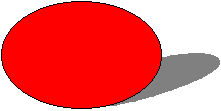

title: Using the Shadow Element description: Using the Shadow Element ms.assetid: 905df226-6232-4e1c-8a9c-f4d4c50b13fa keywords:
This topic describes VML, a feature that is deprecated as of Windows Internet Explorer 9. Webpages and applications that rely on VML should be migrated to SVG or other widely supported standards.
[!Note]
As of December 2011, this topic has been archived. As a result, it is no longer actively maintained. For more information, see Archived Content. For information, recommendations, and guidance regarding the current version of Windows Internet Explorer, see Internet Explorer Developer Center.
Â
In this topic, we will illustrate how to use the <shadow> sub-element to draw a shape that has various shadow effects.
You can place the <shadow> sub-element inside the <shape>, <shapetype>, or any predefined shape element to draw a shape with a shadow. You can then use the property attributes of the <shadow> sub-element to customize the shadow.
For example, to create a shape with a shadow, as shown in the following picture, you can type the following lines in the <BODY> region of your Web page:

<v:oval style='width:120pt;height:80pt;' fillcolor="red">
<v:shadow on="t" type="perspective"
origin=".5,.5" offset="0,0"
matrix=",-92680f,,,,-95367431641e-17"/>
</v:oval>
on="t" and type="perspective" indicate to turn on the shadow using the perspective type.matrix="..." specifies the perspective transform matrix.For more information about this element, see the VML specification .
Â
Â